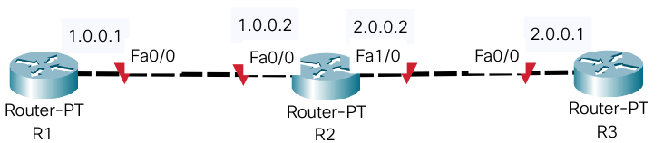

Bienvenidos a la asignatura Redes Locales
En esta página encontrarás vídeos y otros recursos para utilizar en la asignatura.
CONFIGURACIÓN DE RUTAS ESTÁTICAS
Necesitamos crear rutas estáticas en los routers que no acceden directamente a otra red del diseño.
Cremos un diseño de red con 3 routers.

En el diseño anterior hay 2 redes: la 1.0.0.0 y la 2.0.0.0
El R1 está conectado directamente a la red 1.0.0.0 y no llega directamente a la red 2.0.0.0, por lo que debemos hacer una ruta estática en R1 indicando a quién debe entregar un paquete (Next Hop) cuyo destino sea la red 2.0.0.0 (Network)
De la misma manera, el R3 accede directamente a la red 2.0.0.0 pero si recibiera un paquete cuyo destino fuera la red 1.0.0.0 este R3 no sería capaz de enrutarlo. Por lo que tenemos que configurar también una ruta estática en R3. Indicaremos a qué red (Network) no llega y a quién le entrega el paquete para que lo redirija.
- R1: Network=2.0.0.0 Mask=255.0.0.0 Next Hop=1.0.0.2
- R3: Network=1.0.0.0 Mask=255.0.0.0 Next Hop=2.0.0.2